⚫ Task 1 · Threshold & Paths
✍️ Task 2 · Text on Path
🎨 Task 3 · Blend & Cite
📝 Progress Report
📤 Submit
🏠 Start Overview ⚫ Task 1 Threshold ✍️ Task 2 Text on path 🎨 Task 3 Blend & cite 📝 Report Reflect 📤 Submit Padlet
🏠 What You Will Do Today
You made photocopier or scanner experiments for homework. Today you turn them into a text on path design. This is text that follows the shapes in your image.
Key words:
Threshold — turns your image pure black and whitePath — a line that text can followText on Path — text that follows a shape
Today's Tasks
⚫ Task 1
Apply Threshold. Turn your shapes into a path.✍️ Task 2
Add text that follows your path.🎨 Task 3
Blend your text. Add an artist reference.📝 Report
Reflect. Download your PDF.📤 Submit
Upload your work to Padlet.
Artist Inspiration
These artists use photocopiers and scanners to make work. Click a card to see more.
💡 Remember
Write down any artists you like. You will add a proper citation in Task 3.
← Back
Task 1: Threshold & Paths →
⚫ Task 1 — Threshold & Paths
Goal: make your image high-contrast. Then turn the shapes into a path for text to follow.
Steps — click to open
1 Set up your document ›
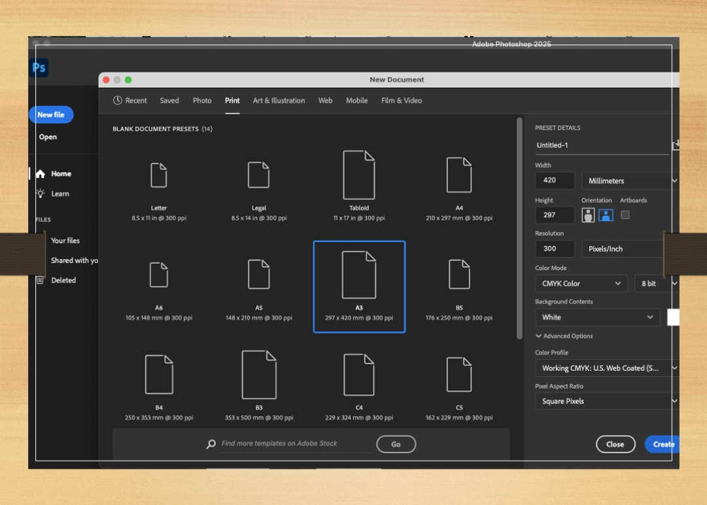
Image not found:
🔍 Enlarge
New document: — A3, 300dpi
Import your photocopier or scanner experiment
Duplicate your layer: Cmd/Ctrl +J
💡 Tip Always work on the duplicate. Keep your original safe.
2 Apply Threshold ›
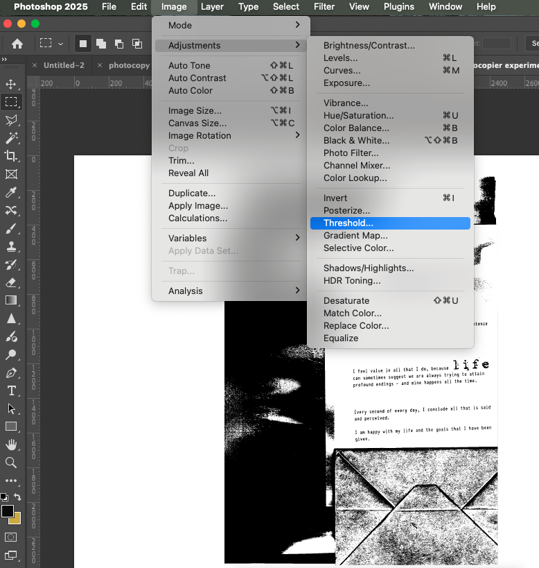
Image not found:
🔍 Enlarge
Select your duplicated layer
Move the slider. Click OK.
What Threshold does: makes your image pure black and white. No grey. This gives you clear shapes.
3 Make a selection ›
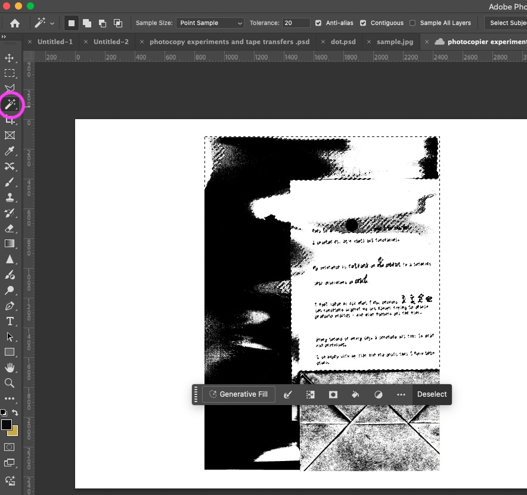
Image not found:
🔍 Enlarge
Magic Wand tool: W
Click a black or white shape you like
Hold Shift to add more areas
Two other ways to select:
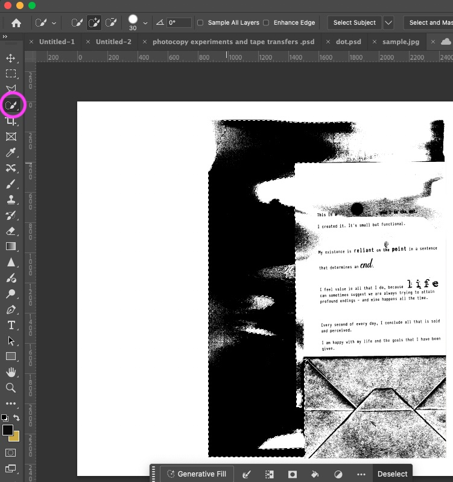
Image not found:
🔍 Enlarge
Quick Selection — drag over an area
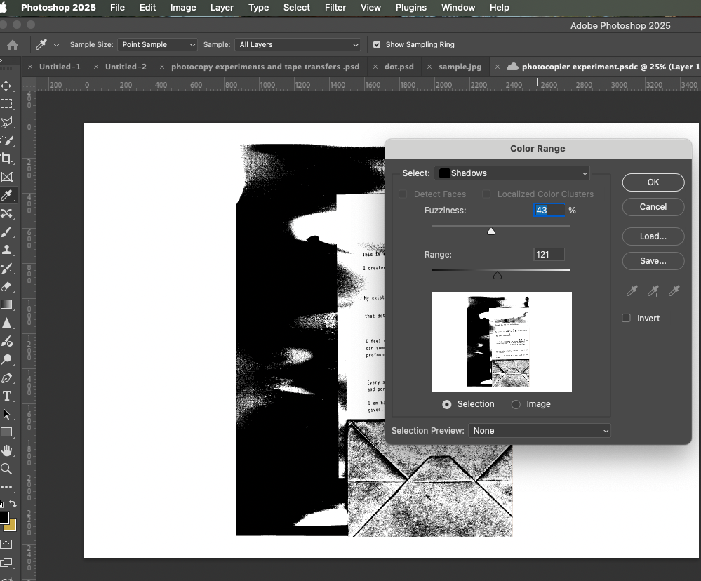
Image not found:
🔍 Enlarge
Color Range — selects by colour
4 Turn your selection into a path ›
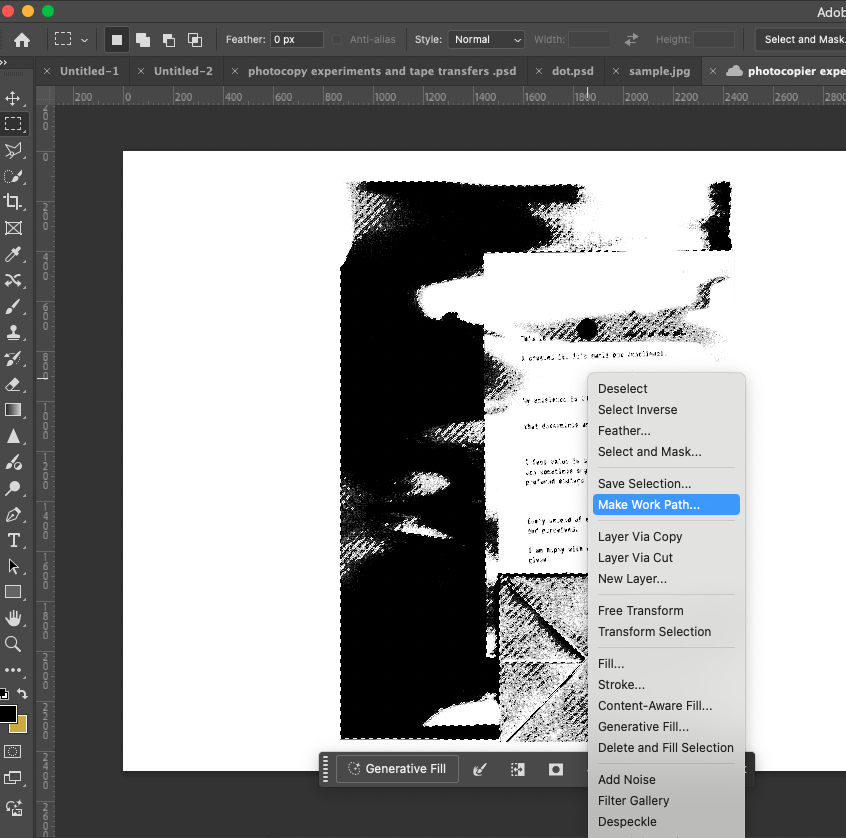
Image not found:
🔍 Enlarge
Right-click your selection →
Tolerance: 1.0 pixels . Click OK.
Open to see it
Double-click "Work Path" to save it with a name
🆘 Stuck? Try this
Threshold (or another adjustment) is greyed out.
Your layer is a Smart Object. Right-click the layer › Rasterize Layer . Try again.
Magic Wand selects too much or too little.
Change Tolerance in the top bar. Try 20–40.
I can’t see “Make Work Path” when I right-click.
Choose a selection tool first (W or M ). Then right-click inside the selection.
A “Fill” window opens when I press Delete.
You are on a locked Background layer. Click Cancel . Double-click the Background layer, click OK , try again.
✅ Task 1 Checklist
Created A3 document and duplicated layer Applied Threshold adjustment Made a selection with Magic Wand Converted selection to a path and saved it Process JPEG exported
← Overview
Task 2: Text on Path →
✍️ Task 2 — Add Text on Path
Goal: add text that follows the path you made in Task 1.
Steps — click to open
1 Select the Type tool ›
Press T
Select your path in the Paths panel first
2 Click on the path ›
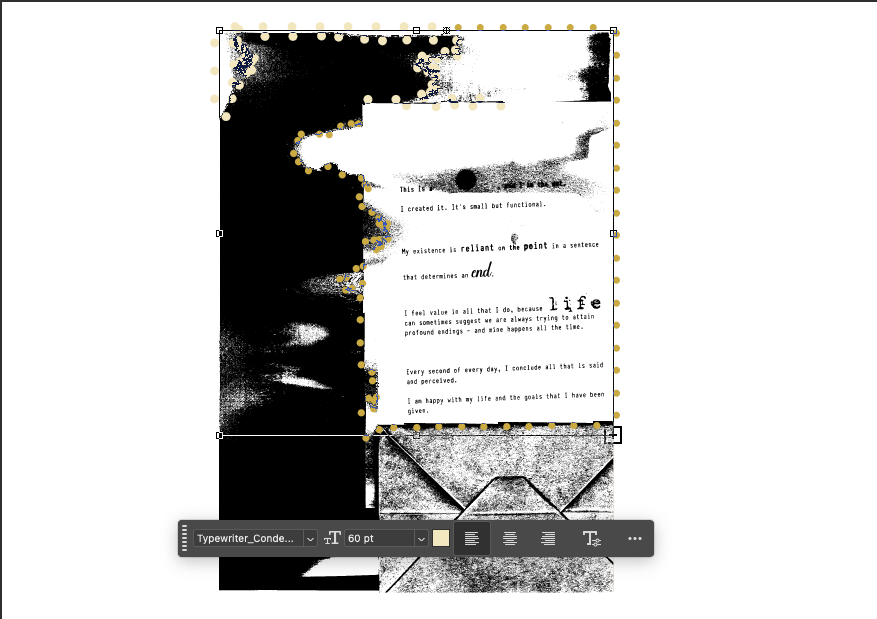
Image not found:
🔍 Enlarge
Move your cursor near the path
Wait for the cursor to change
Click where you want the text to start
Cursor not changing? Check your path is selected in the Paths panel.
3 Type your text ›
Your text will follow the path. Try:
An artist quote — from an artist you likeKeywords — from your Term 2 project
Text Ideas
Artist quote
"I am interested not in individual readings, but in constructing networks of images and meanings."
— Wolfgang Tillmans
Keywords
TEXTURE · MEMORY
Choose a Font
Andale Mono
Clean monospace Courier New
Typewriter feel
🆘 Stuck? Try this
My text is in a box, not on the path.
Undo Cmd/Ctrl +Z . Select the path in the Paths panel. Click exactly on the line when the cursor changes.
I can’t see my text.
Make it bigger, or change the colour, in the top bar.
✅ Task 2 Checklist
Added text on your path Text is a quote or keywords Chosen a font that fits Text is readable Process JPEG exported
← Task 1
Task 3: Blend & Cite →
🎨 Task 3 — Blend Modes & Artist References
Goal: style your text and add a proper artist citation.
Steps — click to open
1 Apply a blend mode to your text ›
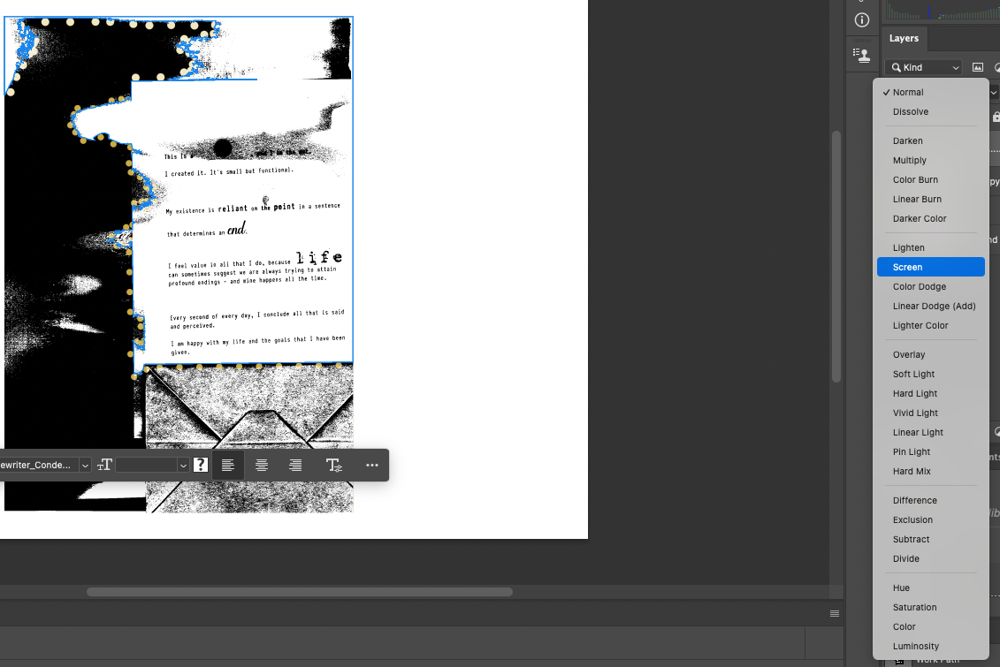
Image not found:
🔍 Enlarge
Select your text layer in the Layers panel
Find the blend mode dropdown — it says "Normal"
Try different modes. Adjust opacity if needed.
2 Add an artist reference ›
Add the artist's name with your quote
Add a Harvard reference at the bottom of your design
3 Final check ›
Check your text is readable
Save your PSD with all layers
Export a JPEG for submission
Blend Mode Ideas
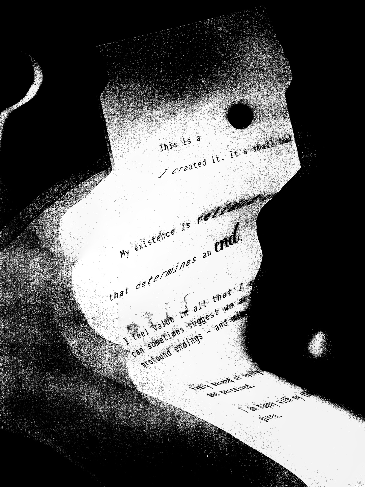
images/blend-mode-multiply.jpg
🔍
Multiply
Darkens. Good on white backgrounds.
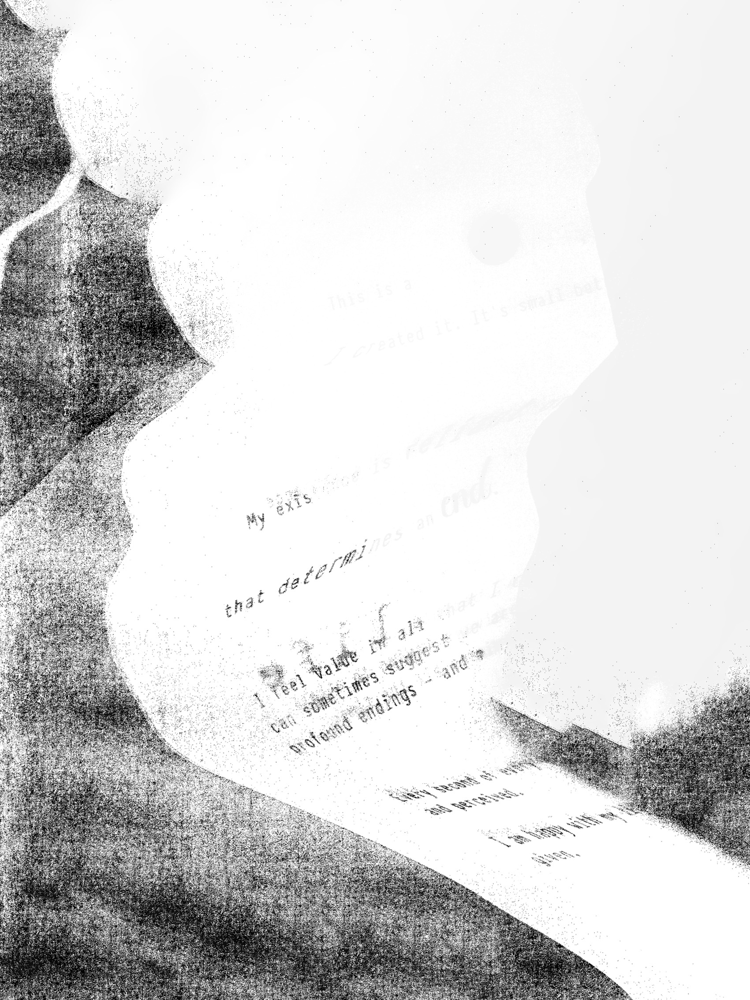
images/blend-mode-screen.jpg
🔍
Screen
Lightens. Good on dark backgrounds.
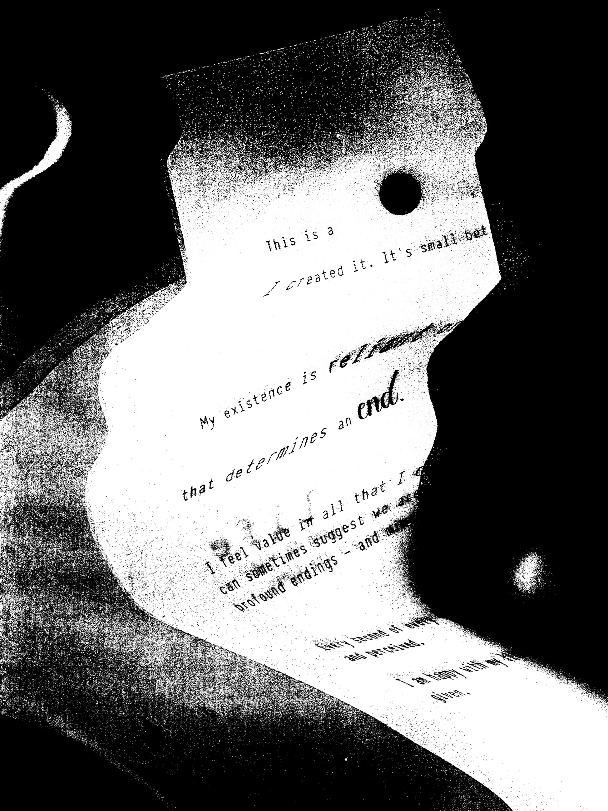
images/blend-mode-overlay.jpg
🔍
Overlay
High contrast effect.
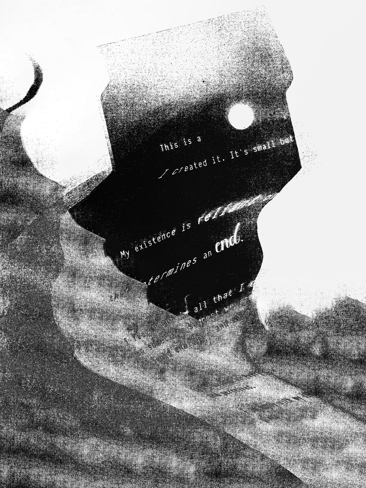
images/blend-mode-difference.jpg
🔍
Difference
Dramatic colour change.
Citation Example
"A constant focus of my work was the challenge to conceptualize 'time' through the essentially static medium of photography."
— William Larson (1978)
Larson, W. (1978) Fireflies [Teleprinter prints]. MoMA, New York.
Student Examples
Finished designs · click to enlarge
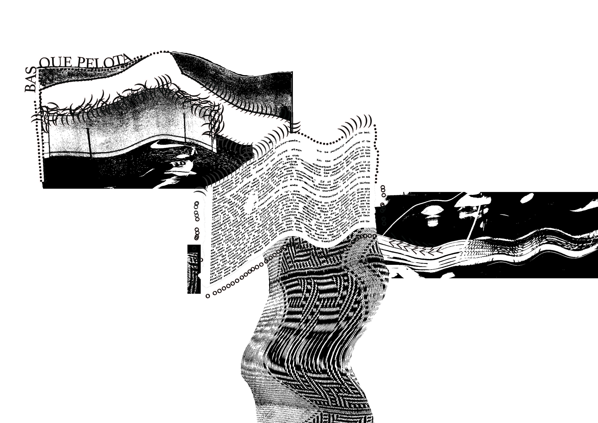
Image not found:
🔍 Enlarge
Inspired by William Larson
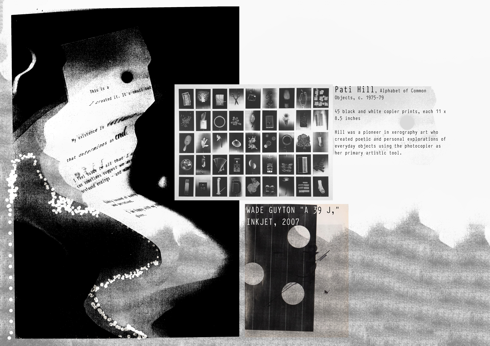
Image not found:
🔍 Enlarge
Inspired by Wade Guyton
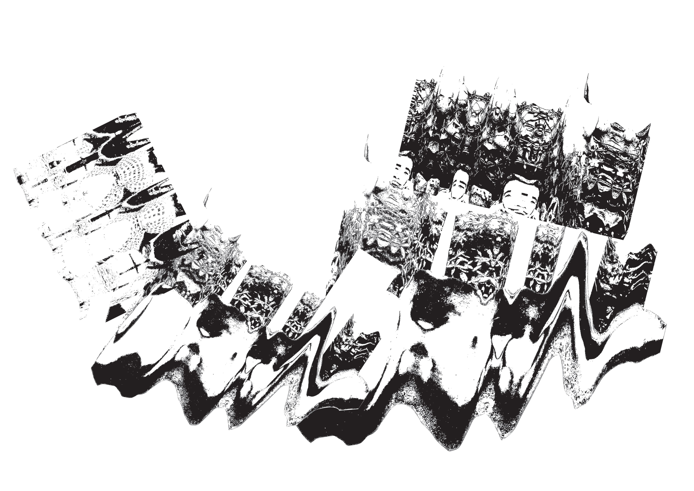
Image not found:
🔍 Enlarge
Photocopier experiment
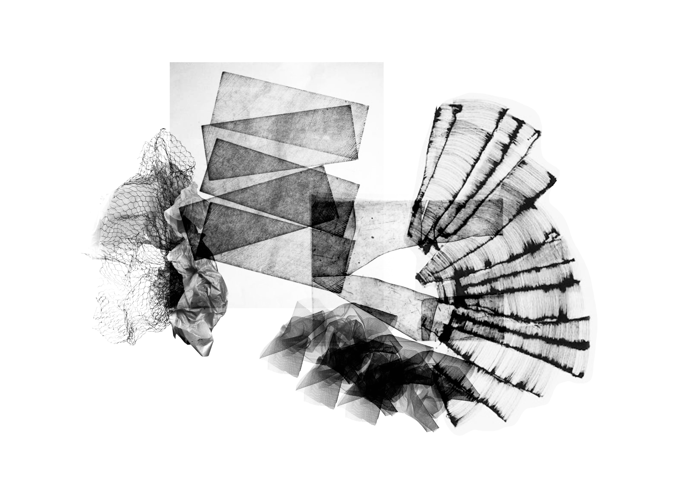
Image not found:
🔍 Enlarge
Scanner experiment
🆘 Stuck? Try this
The blend mode does nothing.
Click your text layer in the Layers panel first.
I forgot to export a JPEG during the task.
Open Window › History . Click an earlier step. Export your JPEG. Click the last step to return. Do not edit while on an earlier step.
✅ Task 3 Checklist
Applied a blend mode to your text layer Added an artist quote and Harvard reference Saved PSD with all layers Exported as JPEG Process JPEGs exported for your report
← Task 2
Progress Report →
📝 Progress Report — Document & Reflect
Why? It shows how you learned. Reflection is assessed at Level 5.
Steps — click to open
2 Name + JPEGs ›
Export each one: File › Export › Export As… › Format: JPG
Type your full name
Upload 2–3 exported JPEGs — Threshold, text on path, final design
Add a short caption to each
3 Answer 4 questions ›
1. Techniques
Which tools did you use?
2. Challenges
What was difficult? How did you fix it?
3. What worked
What are you happy with?
4. Next time
What will you change?
💡 Useful phrases
"I used … to …" "This worked because …" "This was difficult because …"
4 Download PDF ›
Click Download Progress Report (PDF)
Save it — you upload it to Padlet next
✅ Report Checklist
2–3 JPEGs with captions Answered all 4 questions Downloaded the PDF
← Task 3
Submit →
📤 Submit Your Work
Upload Three Items
1. Original experiments
2–3 photocopier or scanner experiments
2. Final design
JPEG · Threshold, text on path, blend mode, reference
3. Progress Report
PDF from the report tool
📤 Upload to Padlet ↗
✅ Final Checklist
Uploaded 2–3 original experiments with notes Uploaded final design with text on path Uploaded Progress Report PDF Saved your PSD file
What You Learned Today
Threshold — made a high-contrast imagePaths — turned a selection into a pathText on path — text that follows a shapeBlend modes — creative text effectsCitations — referencing an artist properlyReflection — explaining your process
← Report
↺ Back to Start
© 2026 Digital Editing: Photocopier & Scanner · IELS Level 5